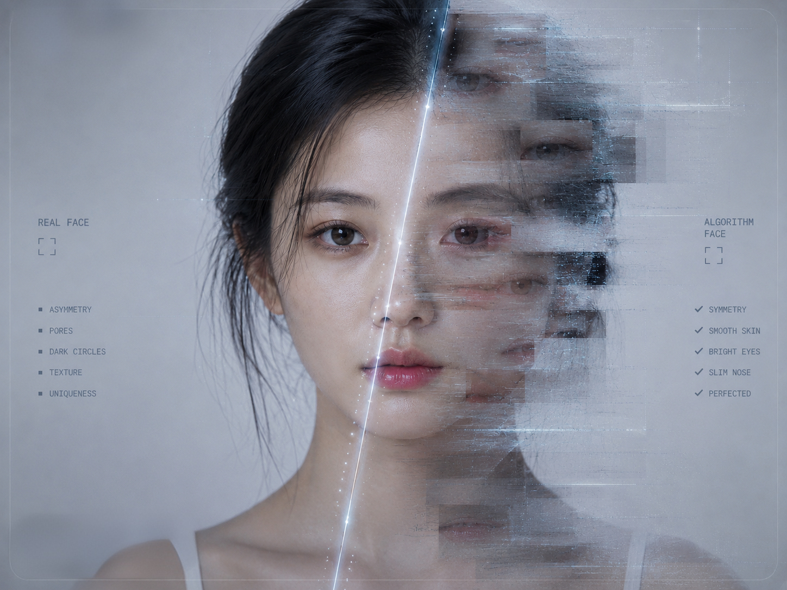

REAL FACE NOT FOUND
SELF IMAGE PROCESSING...
05 / UNSTABLE SELF-IMAGE
The Unstable Self-image
Photography becomes a mirror of the edited self.
In digital screen culture, photography no longer simply records appearance. It produces a screen-ready version of the face through visibility, simulation and algorithmic correction.
The filtered image becomes a digital mirror: attractive, controlled and unstable. As the edited face becomes familiar, the unfiltered face may begin to feel incomplete.
THEORETICAL FRAME
Sherry Turkle argues that digital technologies shape how people construct and experience the self. This helps frame the filtered face as a mediated identity rather than a stable reflection.
Turkle, 2011